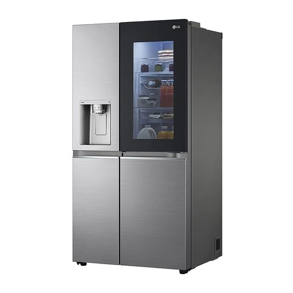

წარმოიდგინეთ ცხოვრება მაცივრის გარეშე. რთულია, არა? ეს საყოფაცხოვრებო ტექნიკა ჩვენი ყოველდღიურობის განუყოფელი ნაწილია, განსაკუთრებით კი მაშინ, როცა ზაფხული მოდის და სიცხე გვიტევს. მაცივარი არ არის უბრალოდ ტექნიკა; ის არის თქვენი ოჯახის ჯანმრთელობაზე ზრუნვის, კულინარიული შთაგონების და ფინანსური რესურსების რაციონალურად გამოყენების გარანტი. სწორად შერჩეული მაცივრები უზრუნველყოფენ პროდუქტის ხარისხის ხანგრძლივად შენარჩუნებას, გეხმარებათ შეამციროთ დანახარჯები გაფუჭებული სურსათის გადაყრის თავიდან აცილებით. თანამედროვე სამყაროში, სადაც დრო ძვირფასია და ჯანსაღი კვება პრიორიტეტული, მაღალტექნოლოგიური მაცივარი ნამდვილად შეუცვლელი შენაძენია ყველა ოჯახისთვის.

Price 3999.9ლ